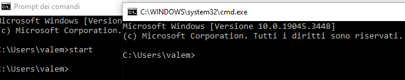

SET | Visualizza, imposta o rimuove variabili di ambiente di Windows. |  |
SETLOCAL | Inizia la localizzazione di modifiche di ambiente in un file batch. |  |
SC | Visualizza o configura i servizi (processi in background). |  |
SCHTASKS | Pianifica comandi e programmi da eseguire su un determinato computer. |  |
SHIFT | Modifica la posizione di parametri sostituibili in file batch. |  |
SHUTDOWN | Consente il corretto arresto del computer in modalità locale e remota. |  |
SORT | Ordina l'input. |  |
START | Avvia una finestra separata per l'esecuzione del programma o comando specificato. |  |
SUBST | Associa il percorso a una lettera di unità. |  |
SYSTEMINFO | Visualizza la configurazione e le proprietà specifiche del computer. |  |